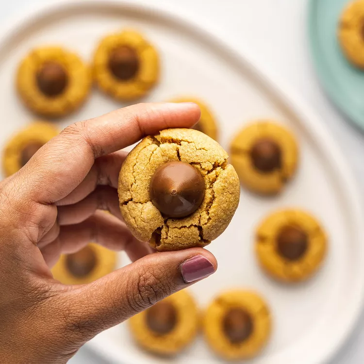

This peanut butter kiss cookies recipe has a chocolate Hershey Kiss to make peanut butter blossoms for a classic holiday treat.
Submitted by Sharon Baetcke Updated on February 12, 2026
This peanut butter kiss cookie recipe, with its four ingredients and irresistible results, almost seems too good to be true. But trust us: These decadent and easy peanut butter cookies with Hershey's Kisses are very, very real.
These are the four ingredients you'll need for this crowd-pleasing peanut butter kiss cookie recipe:
Store these peanut butter kiss cookies in an airtight container at room temperature for up to 5 days. To keep the cookies soft and prevent the chocolate kisses from smudging, allow them to cool completely before stacking. If layering, place parchment or waxed paper between layers.

Yes! For the best results, freeze the dough balls before baking. When you're ready to enjoy them, simply bake them according to the recipe and press a fresh Hershey's Kiss into each warm cookie. You can freeze the cookie dough for up to three months.
"Love these cookies," says Dawn Sullivan. "I roll them in green or red sugar for Christmas."
"My whole family loves these cookies," according to lislis23 "My dad says they are just like the cookies my grandma used to make. You can even replace the kisses with semi-sweet morsels and mix them in with the dough. It's great that way, too."
"These are by far the easiest cookies you will ever make, and they taste the best, " raves Camille. "Make sure the cookies are completely cooled before you try to store them, or there will be chocolate everywhere. Delicious, scrumptious chocolate."
Editorial contributions by Corey Williams

Follow Us
About Us
Privacy Policy
Terms of Use
Careers
Manage your Magazine Subcription
Editorial Process
Product Vetting
Advertise
Contact
Magazine Subscription Help